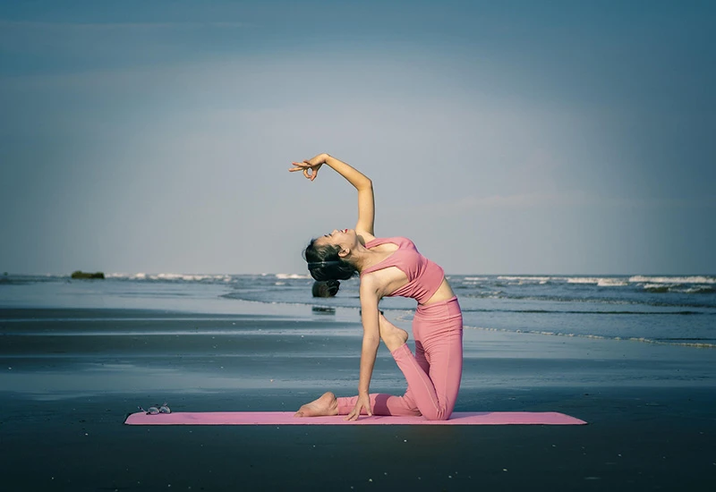
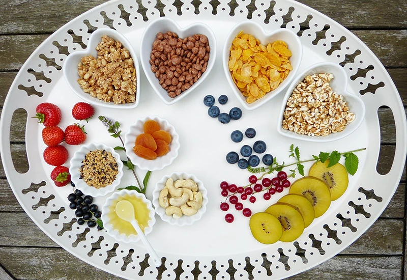

健康
身體保健
身體是我們生活與感受世界的基礎，因此照顧好身體，是療遇生活的重要起點。當生活忙碌、作息不規律或壓力長期累積時，身體往往會用疲倦、失眠、頭痛或專注力下降來提醒我們需要休息。
身體健康並不是追求完美的體態，而是建立穩定而友善的生活習慣，例如規律睡眠、適度活動、充足休息與良好的日常節奏。
當身體被好好照顧時，免疫力與能量自然會提升，人也更容易保持清晰的思考與穩定的情緒。療遇生活所強調的身體健康，是學會傾聽身體的訊號，尊重它的需要，並在忙碌生活中留下一點空間給自己。當身體逐漸恢復平衡，人也會重新感受到生活的輕盈與力量。
心理層面
心理健康指的是我們如何理解與面對自己的情緒與想法。生活中每個人都會遇到壓力、挫折或情緒波動，這些感受其實都是內在的重要訊息。
療遇生活並不是要求自己永遠保持快樂，而是學會看見與理解情緒。當我們願意停下來問問自己「現在的感覺是什麼」，情緒就不再只是困擾，而是一種提醒與引導。
透過深呼吸、書寫心情、與信任的人交流，或簡單的靜心練習，都能幫助情緒慢慢釋放。當情緒被理解與接納，人就不容易被壓力淹沒。心理健康的關鍵在於建立與自己的良好關係，讓內心有一個可以安心停靠的地方。當內在穩定，面對生活的變化也會更有力量。
運動

身體活動
運動不只是鍛鍊體能，更是一種讓身心重新流動的方式。
當身體活動時，血液循環與呼吸節奏會變得更順暢，身體也會釋放幫助放鬆與愉悅的化學物質，使人感到更有精神。療遇生活中的運動，不一定要追求高強度或長時間，而是選擇適合自己的方式，例如散步、伸展、瑜伽或輕鬆慢跑。這些溫和的活動能幫助身體釋放長時間累積的緊繃與壓力。
當身體持續活動，整體能量也會逐漸提升。運動的真正價值，不只是讓身體更健康，也讓人重新感受到身體的存在與力量，從忙碌的思緒中回到當下。
呼吸與身心調節
呼吸是人體最自然的節奏，也是調節身心的重要工具。當我們緊張或壓力升高時，呼吸往往會變得急促而淺短。
透過緩慢而深長的呼吸，可以幫助神經系統放鬆，讓身體逐漸回到穩定狀態。簡單的呼吸練習，例如慢慢吸氣、停留幾秒再緩緩吐氣，能讓身體感受到安全與放鬆。當呼吸變得穩定，大腦也會逐漸安靜下來。
許多冥想與靜心練習都以呼吸為基礎，因為呼吸能讓人回到當下的感受。療遇生活中的呼吸練習，是一種隨時都能進行的自我照顧方式。當我們願意停下來好好呼吸，內在的節奏也會慢慢重新對齊。
飲食

均衡飲食
飲食是身體能量的重要來源，也是健康生活的重要基礎。療遇生活中的飲食理念並不強調過度限制，而是重視均衡與自然。
當食物來源多樣、營養充足，身體便能獲得維持運作所需的能量。新鮮蔬菜、水果、適量蛋白質與穀物，都能幫助身體保持穩定的代謝與體力。規律的飲食時間，也能幫助身體建立穩定的節奏。
當人願意慢慢品嚐食物，而不是匆忙進食，身體更容易感受到飽足與滿足。飲食不只是填飽肚子，更是一種照顧身體的方式。
當我們用心選擇食物，身體自然會回饋更好的能量與活力。
飲食覺察
除了吃什麼，如何吃也同樣重要。飲食覺察指的是在進食時留意自己的感受，例如是否真的感到飢餓、吃完後身體的感覺如何。
當人忙碌或情緒低落時，有時會不自覺地過度進食或忽略身體的需求。透過簡單的覺察，我們能逐漸理解身體的訊號。例如慢慢咀嚼食物、留意味道與口感，讓進食成為一種專注而放鬆的過程。這種方式能幫助消化系統更順暢，也能減少壓力型飲食。
療遇生活中的飲食覺察，是讓人重新與身體建立連結的一種練習。當我們開始聆聽身體的需求，飲食便不再只是習慣，而是一種溫柔的自我照顧。
靈性
自我覺察
靈性的成長並不是神祕或遙遠的事情，而是逐漸認識自己的過程。
自我覺察指的是觀察自己的想法、情緒與行為模式，而不急著評價對錯。當我們能看見內在正在發生什麼，便更容易理解自己為何會做出某些選擇。
透過靜心、書寫或簡單的內在對話，人可以慢慢看見自己的信念與習慣。這些覺察能幫助我們理解過去的經驗如何影響現在的生活。當理解逐漸增加，人也更容易做出新的選擇。療遇生活中的靈性成長，就是一步一步回到自己，學會與內在建立更深的連結。
內在轉化
內在轉化是靈性學習中重要的一部分。當人開始理解自己的信念與情緒模式，便有機會重新選擇更支持自己的想法。
很多時候，我們的行為與決定都受到過去經驗與潛意識信念影響。透過覺察與練習，人可以逐漸放下不再適合自己的限制，建立新的理解與方向。冥想、情緒釋放或潛意識探索，都是常見的內在轉化方法。
這些練習能幫助人更清楚地看見自己的需求與價值。當內在信念開始改變，生活中的選擇也會跟著不同。療遇生活所強調的轉化，是一種溫和而持續的過程，讓人逐漸走向更自由與平衡的生命狀態。